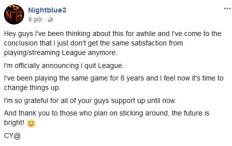

Streamer nổi tiếng Nightblue3 bất ngờ quyết định chia tay với Liên Minh Huyền Thoại
Giờ chẳng biết xem ai Đi Rừng để học theo nữa đây...
Các streamer của Liên Minh Huyền Thoại luôn có một lượng người hâm mộ cực kì hùng hậu, và mới đây thông tin chính thức về việc người Đi Rừng nổi tiếng của máy chủ Bắc Mỹ là Nightblue3 sẽ không còn chơi Liên Minh nữa đã khiến cho cộng đồng cảm thấy rất tiếc nuối!
Nightblue3 là một streamer Liên Minh Huyền Thoại nổi tiếng hàng đầu trên kênh Twitch, anh được biết đến như một người Đi Rừng có kĩ năng cao với việc có thể đem bất kì vị tướng nào vào khu rừng và lên đồ full sát thương. Tính cách của Nightblue3 cũng rất hài hước với những câu nói cửa miệng quen thuộc như “Get outta my jungle” hay “CY@”, và đó cũng là điểm thu hút người xem của anh chàng này.
Nhưng khi đang trên đỉnh của sự nghiệp stream, Nightblue3 mới đây đã bất ngờ tuyên bố về việc sẽ chia tay với Liên Minh Huyền Thoại đã khiến rất nhiều người hâm mộ cảm thấy bất ngờ:

Chia sẻ của Nightblue3 trên facebook
“Chào mọi người, tôi cũng đã suy nghĩ về việc này trong một khoảng thời gian và giờ thì tôi có thể chắc chắn rằng tôi không còn cảm giác vui thích khi chơi hay stream Liên Minh nữa.
Tôi chính thức thông báo rằng tôi sẽ chia tay với Liên Minh.
Tôi đã chơi duy nhất một trò trong 8 năm, và giờ thì tôi nghĩ đã đến lúc để thay đổi.
Tôi cũng rất biết ơn sự ủng hộ của mọi người cho tới tận bây giờ.
Và cũng cảm ơn những người sẽ quyết định tiếp tục gắn bó với tôi, tương lai ở phía trước sẽ còn tươi sáng!
CY@”
Và có lẽ từ bây giờ, chúng ta sẽ không còn được xem những trận đấu Đi Rừng đầy hài hước của Nightblue3 nữa, mong rằng anh vẫn sẽ thành công trong những dự định sắp tới!